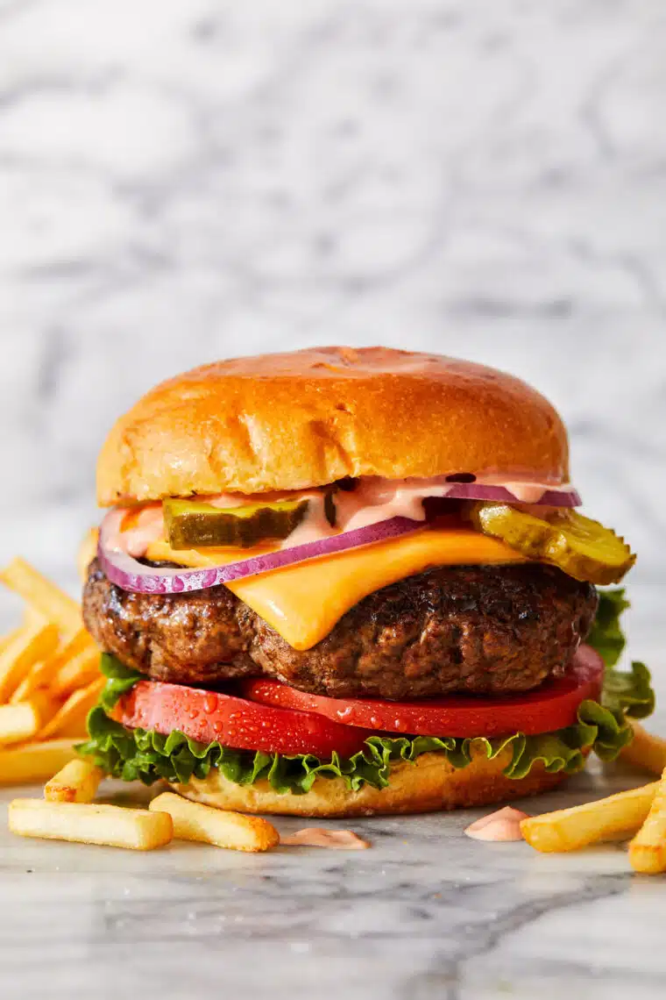

Home
Cheeseburger

Description
Homemade cheeseburgers do not require anything fancy. Just some good ole' 80/20 ground chuck, salt, and pepper. A recipe so easy, you can double or triple as needed, whether you're entertaining for friends and family, or whipping this up for a quick weeknight meal. Not to mention, it's an absolute crowd-favorite, serving with all your favorite toppings. Yields 6 servings.
Ingredients
- 2 pounds ground beef, 80/20
- Kosher salt and freshly ground black pepper
- 1 tablespoon canola oil
- 6 slices American cheese
- 1/2 cup mayonnaise
- 1/4 cup ketchup
- 3 tablespoons dill pickle relish
- 2 cups chicken broth
- 1 tablespoon Dijon mustard
- Brioche hamburger buns
- Romaine or shredded lettuce
- Sliced tomato
- Sliced red onion
Steps
- In a large bowl, combine beef, 1 1/2 teaspoons salt and 1 1/2 teaspoons pepper. Using a wooden spoon or clean hands, stir until well combined. Gently form into 6 1-inch-thick patties, just slightly larger than the burger buns.
- Heat canola oil in a large cast iron skillet over medium high heat. Working in batches, add patties and cook until lightly charred or until desired doneness, about 3-5 minutes per side; top with cheese.
- In a small bowl, whisk together mayonnaise, ketchup, dill pickle relish and Dijon.
- Serve immediately in hamburger buns with burger sauce and desired toppings.